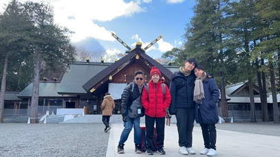

Hi! This section is where you know more general facts about me!
Inspiration
I have looked up to several people in my life but my dad is definitely my role model. His family wasn't well off but he persevered with his studies and helped out his family when he is a student. He is now working in a good paying job as an engineer and tries his best to support the family and making sure we have a roof over us and food on the table. Despite his busy schedule, he still would help me out with some difficult math problems. I would want to be like him, with the heart to continue learning and perservere on despite the odds and take good care of my family.
Family
I am not born here in Singapore, in fact me and my family immigrated to Singapore from Taiwan back in 2012 because of my dad's line of work, so our relatives are all in Taiwan. My dad is an engineer, my mom stays at home to take care of me and my younger brother. We would visit our relatives and friends in Taiwan during my brother and my holidays as well.

Strength
I would say that my strength is that I am very resilient. Even when the odds are against me, I would not falter and give up. I continue to keep trying and learning until I finally succeed. Even if I do not succeed, I would check where went wrong and in the future, apply what I have learnt. My resilience is part of the reason how I am still surviving in this course most probably.
Weaknesses
I would say my stubborness is my weakness. Sometimes when I am caught up in a problem when I am doing my work, I would keep trying for a while and did not even ask for help. I placed all my concentration in to solve the problem, it was then that my resilience turns into a harmful thing. I kept trying and waste a lot of time which definitely placed me in a tough spot during WIUs and near to the end of each assignment.
RIASEC Profile
From the Career Interest section, the top 3 personality that topped my results were A/CE.
| Letters | Personality |
|---|---|
| A | Artistic |
| C | Conventional |
| E | Enterprising |
Aspiration
I aspire to be a programmer working in game studios. I would earn some money after I graduate then attend university before graduating and working in game studios. If I have enough money to start a game studio myself, I will take that risk!